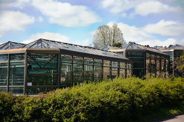
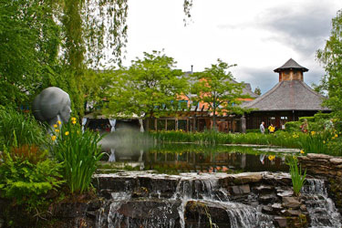
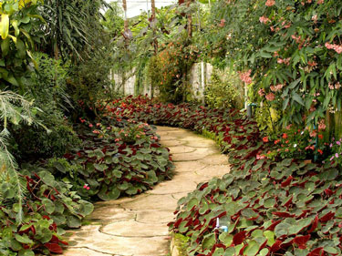

Landscaping
Greenhouses
Our greenhouses are expertly constructed by our team of skilled professionals, ensuring durability and longevity. Each greenhouse is designed to provide optimal growing conditions for plants, with features such as proper ventilation and insulation. Our greenhouses are customizable to suit your specific needs and preferences, making them perfect for both hobbyists and commercial growers. With a focus on quality materials and craftsmanship, our greenhouses are built to last and help you achieve successful harvests year after year.
Ponds and Gazebos
Our company specializes in creating stunning ponds and gazebos that will transform your outdoor space into a tranquil oasis. With our expertise and attention to detail, we ensure that each pond and gazebo is not only aesthetically pleasing but also built to last. Whether you are looking to add a peaceful water feature or a cozy outdoor retreat, our team will work with you to design and construct the perfect addition to your home.
Paths and Patios
Our paths and patios are expertly constructed by our skilled team, ensuring durability and functionality. We use high-quality materials to create beautiful and long-lasting paths and patios that enhance the aesthetic appeal of any outdoor space. Whether you need a new path to guide visitors through your garden or a patio for outdoor entertaining, our experienced builders will work closely with you to bring your vision to life.